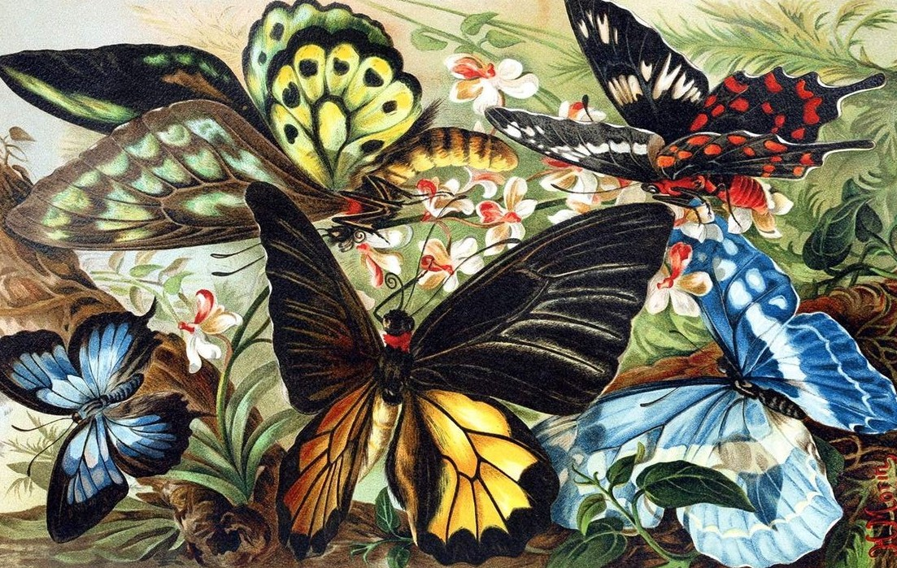
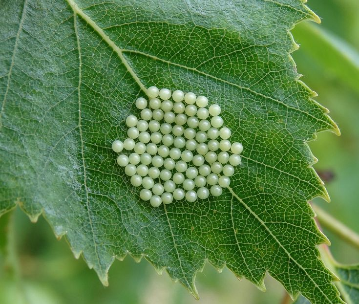
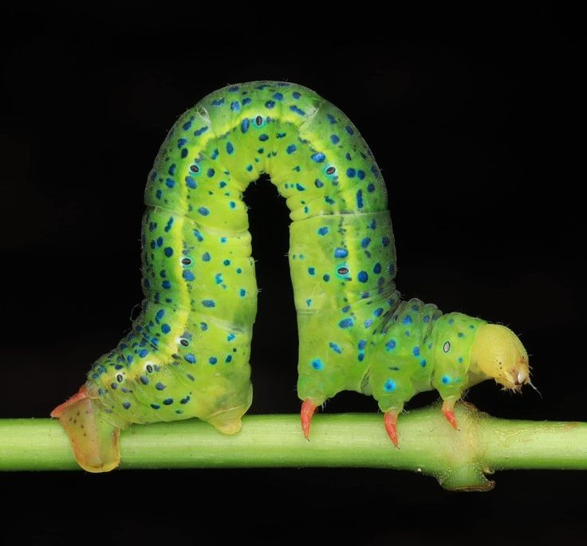
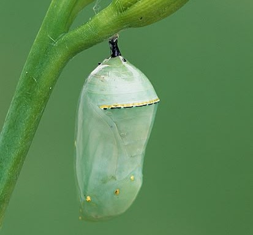
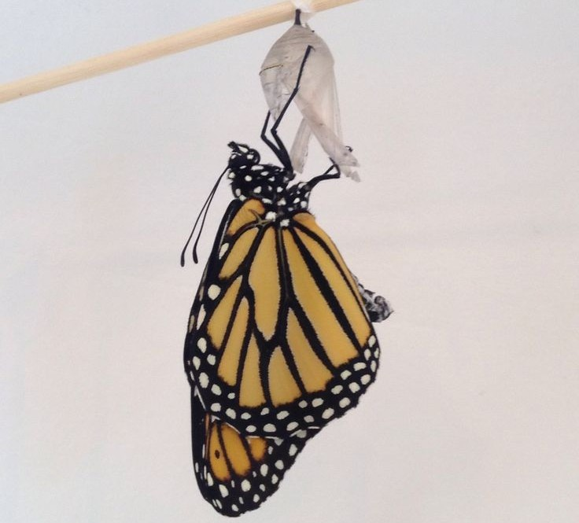
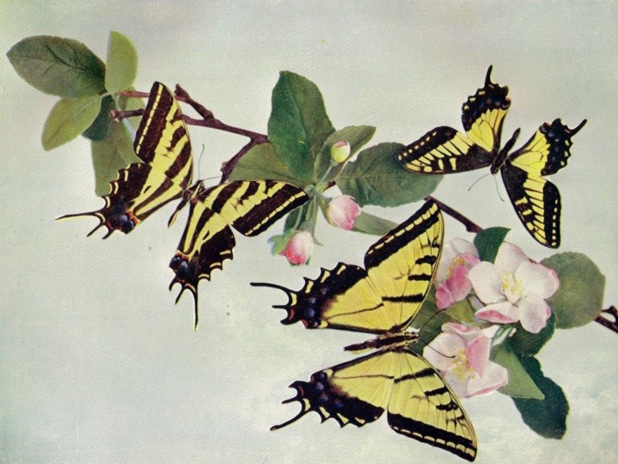

ค้นพบโลกแห่งผีเสื้อ
The Beauty of Butterflies
ผีเสื้อเป็นสิ่งมีชีวิตที่มีความงดงามและเอกลักษณ์เฉพาะตัว ทั้งสีสัน ลวดลาย และรูปทรงของปีกที่แตกต่างกันในแต่ละสายพันธุ์ นอกจากความสวยงามแล้ว ผีเสื้อยังมีบทบาทสำคัญต่อระบบนิเวศ และเป็นส่วนหนึ่งของความสมดุลในธรรมชาติ
ความหลากหลายของธรรมชาติ
The Beauty of Diversity
ผีเสื้อแต่ละสายพันธุ์มีลักษณะเฉพาะที่แตกต่างกัน ไม่ว่าจะเป็นสีสัน ลวดลาย ขนาด หรือรูปทรงของปีก ความหลากหลายเหล่านี้ทำให้ผีเสื้อเป็นหนึ่งในสิ่งมีชีวิต ที่น่าสนใจและสะท้อนถึงความมหัศจรรย์ของธรรมชาติ
การเปลี่ยนแปลงของชีวิต
Life & Transformation
ผีเสื้อมีวงจรชีวิตทั้งหมด 4 ระยะ ซึ่งแต่ละช่วงมีการเปลี่ยนแปลงที่แตกต่างกัน

1. ไข่
จุดเริ่มต้นของชีวิต โดยผีเสื้อตัวเต็มวัยจะวางไข่ไว้บนพืช

2. หนอนผีเสื้อ
เมื่อฟักออกจากไข่ หนอนจะกินใบไม้เพื่อสะสมพลังงานและเจริญเติบโต

3. ดักแด้
เป็นช่วงที่ร่างกายเกิดการเปลี่ยนแปลงเพื่อพัฒนาไปสู่ตัวเต็มวัย

4. ผีเสื้อ
ผีเสื้อออกจากดักแด้และเริ่มต้นชีวิตในรูปแบบใหม่

ความสัมพันธ์กับธรรมชาติ
Butterflies in Nature
ผีเสื้อเป็นส่วนหนึ่งของระบบนิเวศ โดยขณะบินไปดูดน้ำหวาน จากดอกไม้ ผีเสื้อบางชนิดสามารถช่วยถ่ายละอองเรณู และมีส่วนช่วยในการสืบพันธุ์ของพืช
การดูแลรักษาพืชพรรณและแหล่งที่อยู่อาศัยตามธรรมชาติ จึงเป็นอีกหนึ่งวิธีที่ช่วยอนุรักษ์ความหลากหลาย ของผีเสื้อและสิ่งมีชีวิตอื่น ๆ
A Living Archive
รวบรวมความงดงามของธรรมชาติ ผ่านเรื่องราวของผีเสื้อหลากหลายสายพันธุ์
สำรวจคอลเลกชันผีเสื้อ →